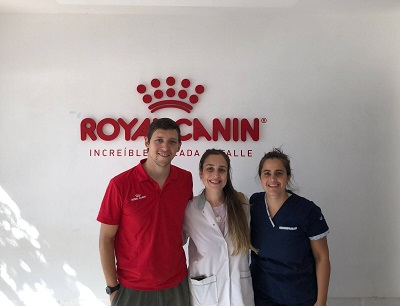
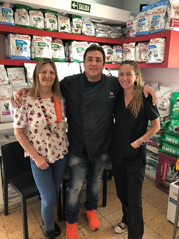

Hay alimentos que pueden dañar la salud de nuestras mascotas, mencionamos alguno de ellos:
- Chocolate
- Sobras de asado
- Palta
- Cebolla
- Café
- Lácteos
- Ajo
- Huesos de pollo
- Uvas y pasas
- Alcohol
Aquí les presentamos a nuestros doctores.
Y a nuestros vendedores.
Los tumores de glandulas mamarias son las neoplasias más comunes en perras y las tercerasmas comunes en gatas.
Mantener al día el plan de vacunación de nuestras mascotas:
Hay alimentos que pueden dañar la salud de nuestras mascotas, mencionamos alguno de ellos: